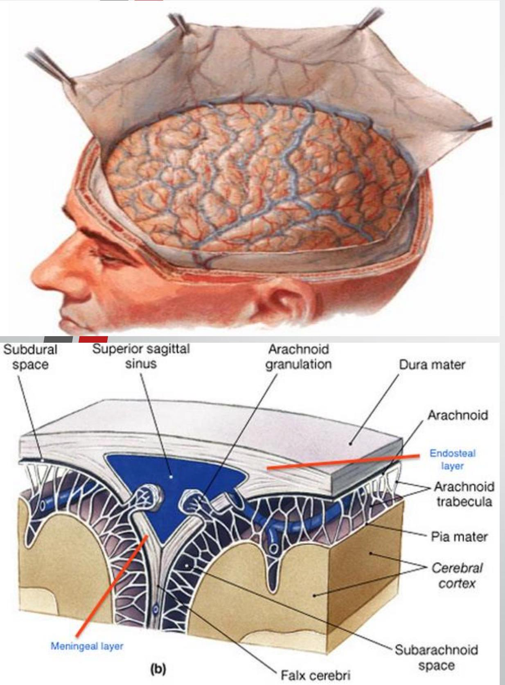
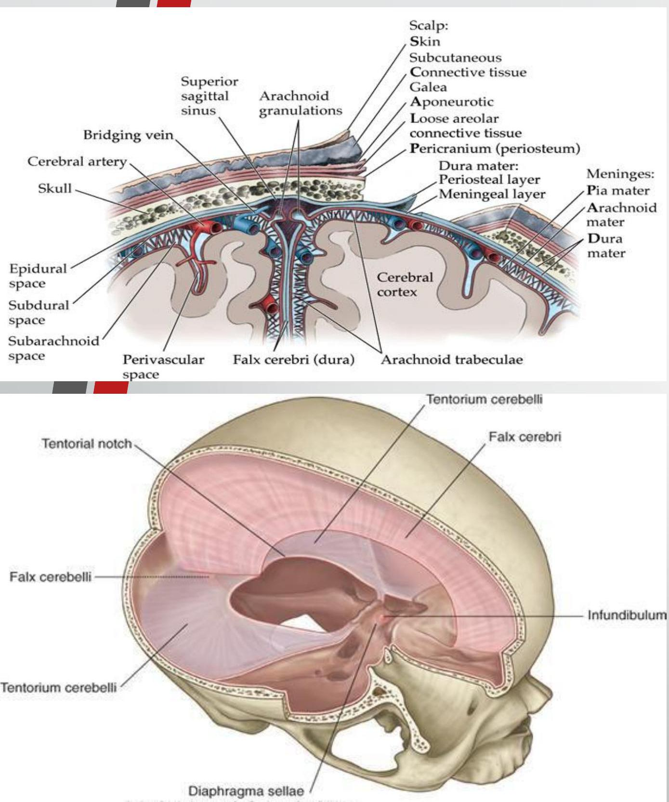
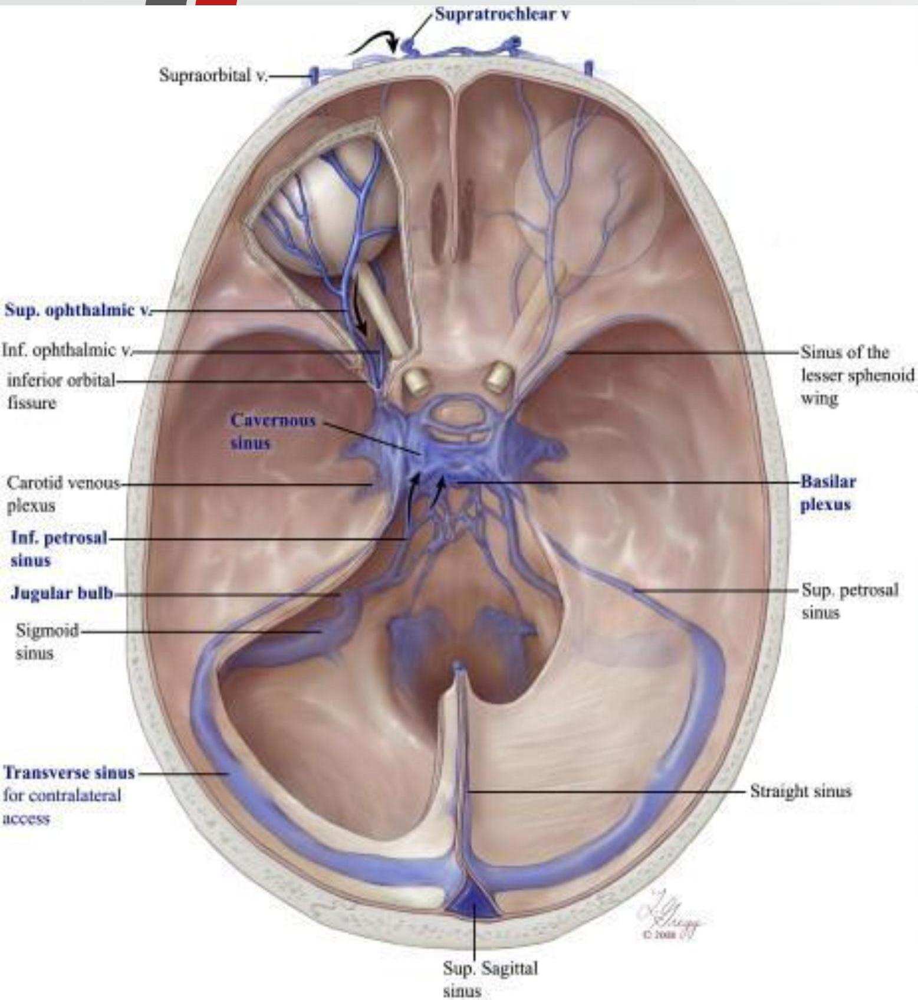
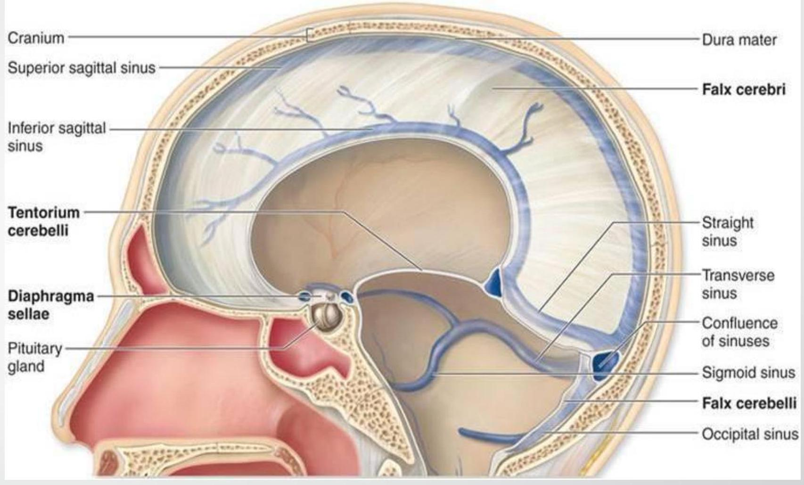
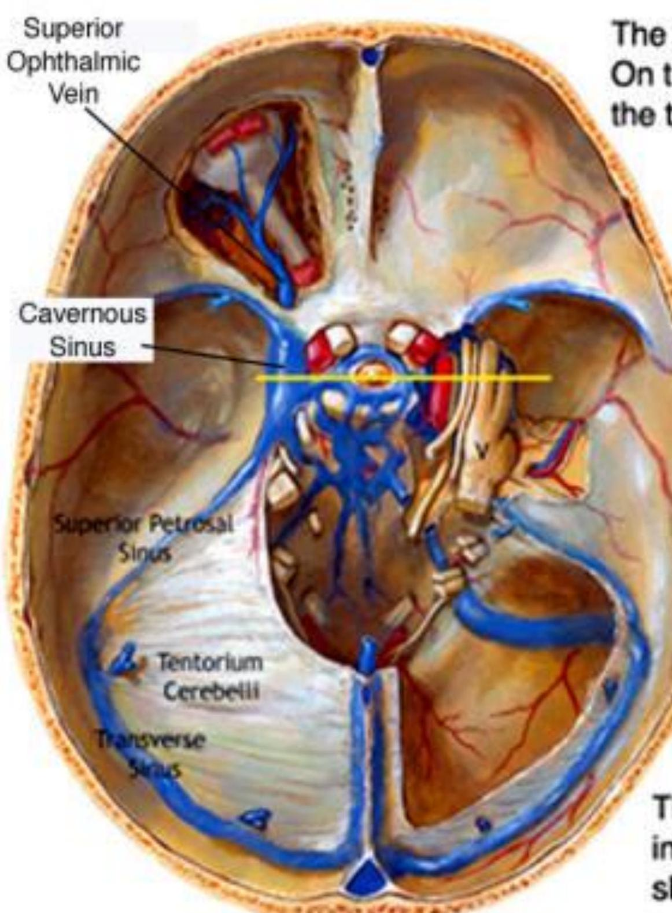
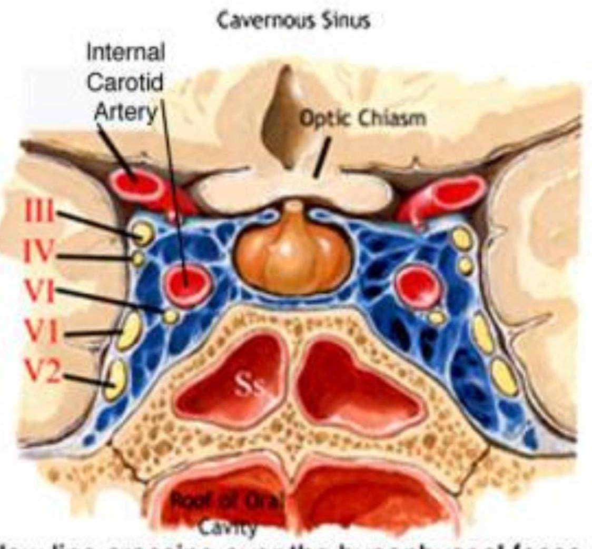
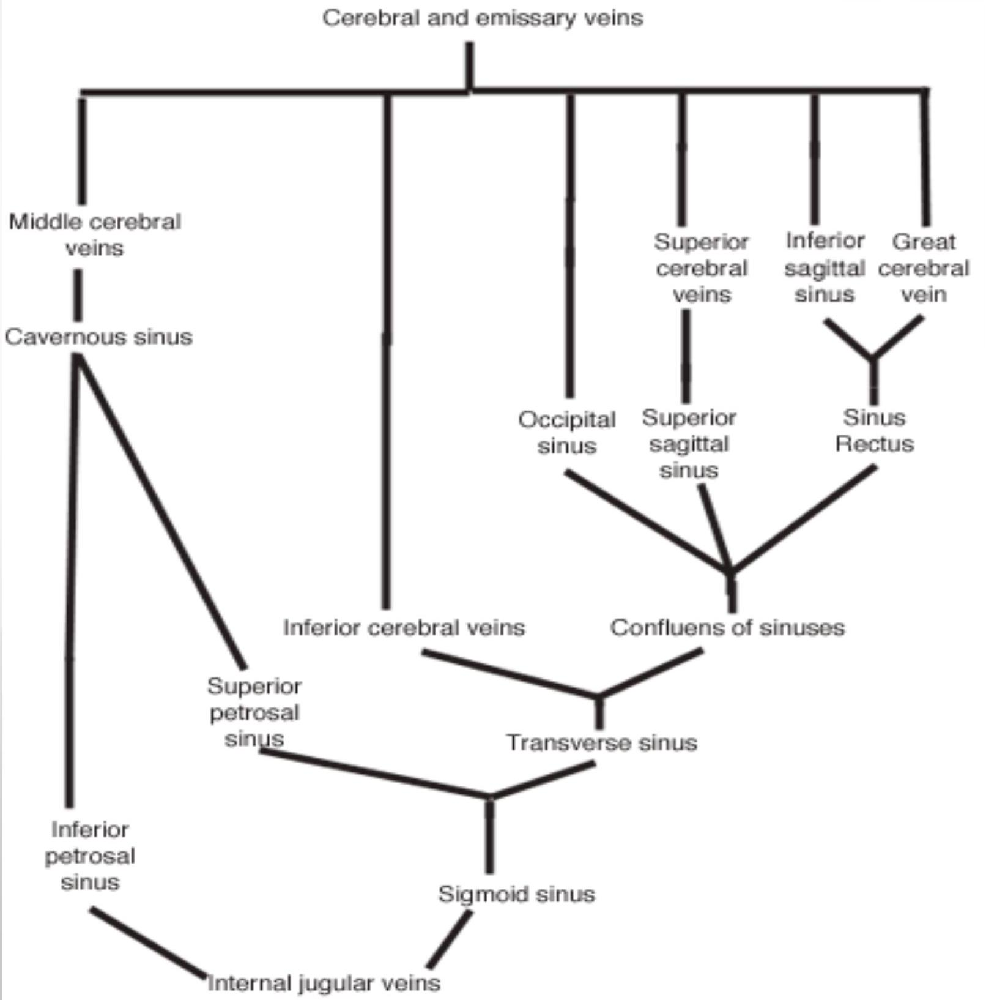
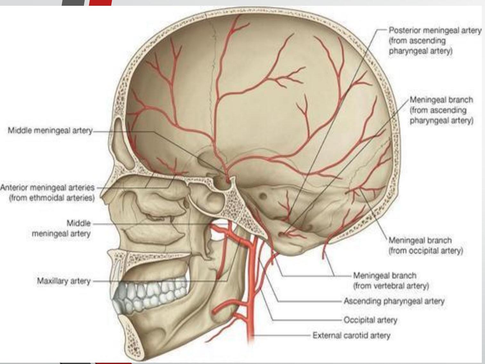

Basic Overview of
Meninges and Dural Sinuses
Expected Learning Outcomes:
- Name the meningeal layers
- Define the meningeal spaces and state the contents of each
- Describe the dural reflections and state their contents
- Location and communications of the dural venous sinuses
- Innervation of the cranial dura
- Clinical significance**
Meningeal Layers and Spaces

- Definition
- Layers
- Layers of the cranial dura
- Meningeal spaces
Dural Reflections

- Definition
- Four main reflections
- Functions
Dural Venous Sinuses


- Definition
- Unique features
Cavernous Sinus

The dura and sinuses are intact on the left side. On the right, the dura has been removed revealing the trigeminal ganglion.
The yellow line crossing over the hypophyseal fossa indicates the plane of section of th image above. It shows the cavernous sinus and its contents.
- Location
- Extents
- Relations
- Contents
- Communications
- Clinical relevance
Dural Venous Sinuses

Vascular supply to the cranial dura

Innervation of the Dura
- Dura is sensitive to ?? -headache
- Dura of Posterior cranial fossa by branches from cervical spinal nerves (C1, C2 & C3)
- Dura of ACF, MCF, Falx cerebri & Tentorium Cerebelli by Trigeminal nerve:
- Anterior meningeal nerves
- Tentorial nerve
- Meningeal branches of maxillary and Mandibular divisions of Trigeminal nerve
THE END
THE END